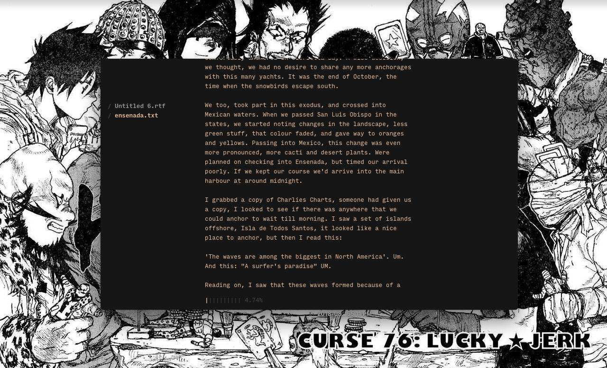

left electron
- download
- tutorial
- creating a new file
- importing an existing file
- writing
- features
- shortcut quick list

Left is distraction-less plaintext editor designed to quickly navigate between segments of an essay, or multiple documents. It features an auto-complete, synonyms suggestions, writing statistics, markup-based navigation and a speed-reader.
download
Both the Uxn and Electron versions are available on itch.io.
Download Lefttutorial
Launch the app. You'll see a main window, as well as a sidebar on the left. You'll be writing in the main window, the sidebar will list all of the markers and separate files that you create.
The app opens with a splash, listing a guide as well as a list of shortcuts. At the bottom left of the main window, there are numbers followed by letters:
- L stands for lines
- W for words
- V for vocabulary
- C for character.
As you write, these numbers will increase and you'll know exactly how many lines, words, characters and unique words there are in your text. These stats are followed by a percentage to show you where you are in the text, with 0% indicating the beginning, and 100% the end - this is useful when writing large texts.
creating a new file
Create a new file with ⌘ + n (most of the shorts using 'command' combined with a letter or other character).
The main window will now be empty. If you look on the sidebar you will see the splash listed, you can return to it by selecting it or by using ⌘ + ] and ⌘ + [.
The file you created, by default is named 'untitled', you can rename it by saving the file using ⌘ + n.
importing an existing file
Open a text file by dragging it over Left, or using the shortcut ⌘ + o. You can close a file, by pressing ⌘ + w.
writing
To better organize your text, you can create markers by beginning lines with:
# or ##
Using these will list them on the sidebar in different ways.
- # will create a main header.
- ## will create a sub-header.
The markers will be listed under your document name on the side bar, and whichever other document that you create will be listed underneath everything.
Once you have more than one marker, you can cycle through them using ⌘ + ].
features
Left has many built-in features to help you write more efficiently, these include:
- A synonyms dictionary
- Auto-complete of words
- A speed reader
- A quick insert mode
Synonyms - The synonyms of every word, appear on the bottom of the main window, you can cycle through the synonyms of a selected word by keeping shift pressed down, and then pressing tab to cycle through them. When you release the keys, the word will be replaced with the selected word. You can undo this change with ⌘ + z.
Autocomplete - You can press tab to auto-complete a previously used, or common, word.
Speed reader - to use it highlight some text and press ⌘ + k to enable it. Press escape to stop it.
- Date - You can insert the current date into your text, by pressing the shortcut ⌘ + d
- Time - Insert the current time into your text by pressing the shortcut ⌘ + t.
- Header - Create a header by pressing ⌘ + h.
- Comment - Create a comment by pressing ⌘ + /.
You can leave insert mode by pressing the escape key.
You can cycle between 3 fonts, using ⌘ + < or ⌘ + >. The font size can also be increased and decreased using ⌘ + - and ⌘ + +.
shortcut quick list
- Create markers by beginning lines with # or ##
- Navigate quickly between markers with ⌘ + ] and ⌘ + [
- Open a text file by dragging it, or with ⌘ + o
- Highlight some text and press ⌘ + k to enable the speed reader
- Press tab to auto-complete a previously used, or common, word
- Press shift + tab to scroll through the selected word's synonyms
- ⌘ + i Quick insert mode
- ⌘ + d Date
- ⌘ + t Time
- ⌘ + p Path
- ⌘ + h Header
- ⌘ + H Sub-Header
- ⌘ + / Comment
- ⌘ + l Line
- Cycle between font styles using ⌘ + < and ⌘ + >
- Decrease font using ⌘ + -
- Increase font using ⌘ + +